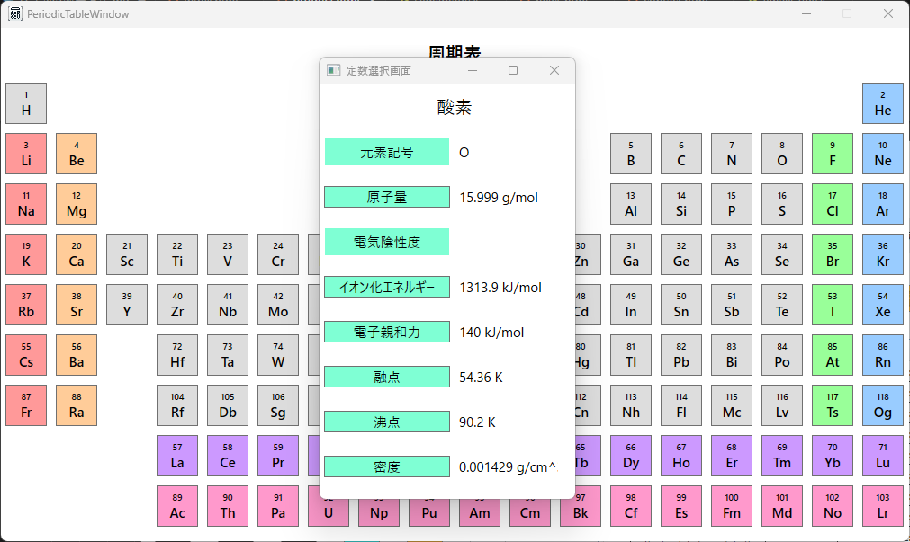

Product
S-Calc - 高機能なWindows向け関数電卓
S-Calcは、研究・技術計算向けに開発された高機能な関数電卓ソフトです。
主な特長
- 計算履歴を保存し、過去の計算を簡単に呼び出し可能
- 定数やカスタム関数を登録して繰り返し活用
- 直感的でシンプルなUI、初心者でも使いやすい
- Windows環境でスムーズに動作、エンジニア向け最適化
▼ S-Calcについて詳しく ▼
高度な計算をもっと効率的に。
研究・開発・技術計算の現場では、関数電卓の精度と柔軟性が求められます。
しかし、市販の関数電卓ではカスタム関数を自由に登録できないなど、計算業務をスムーズに進めるのが難しいことがあります。
そこで、より直感的に使え、研究・開発向けの機能を充実させたソフトを開発しました。
それが、Windows向け高機能関数電卓ソフト「S-Calc」です。
1.主要機能の概要
S-Calcの基本的なコンセプトS-Calcを開発した経緯としまして、工業高校化学科、理系4大化学科を卒業した私がシステムエンジニアとして業務をしている際、
WindowsPCで使える使いやすい関数電卓ソフトは無いかと考えたことがことの発端となっております。
システムエンジニアとして会社に勤務している時の計算は、大体がWindowsに付属されている電卓もしくは某表計算ソフトでの計算となっており、
関数電卓ではなかったWindowsの電卓での計算式の入力や、某表計算ソフトでの関数の入力についてメンバに連携するのが困難であったことがありました。
そのような経緯から、慣れている関数の書き方や関数や定数の連携が簡単に行えるような関数電卓の開発を行いました。
ですので、「S-Calc」はグループでの作業に向いているWindows向け関数電卓ソフトとなっております。
「S-Calc」は研究者の方や技術者の方、エンジニアの方に向いているソフトであると考えています。
2.具体的な機能
カスタム関数
ユーザ定義の数式を登録・活用することが出来る機能。
計算履歴
過去の計算を参照。式、解の再利用可。
定数機能
よく使う定数を保存・呼び出しすることが出来る機能。
周期表機能
現在IUPACが定めている最新周期表に準拠した元素データを搭載し、そのデータを計算に使用することが出来る機能。

3.活用例
0℃、1気圧、1molの気体の体積が22.4Lであることは、化学を学んだ方なら一度は目にしたことがあるでしょう。
理想気体の状態方程式（PV=nRT）の式をVについての式に変形して、22.4Lとなることを確認しました。
4. なぜS-Calc？ 他ツールとの違い
S-Calcは、Windows標準の電卓やExcelと比べて、より直感的で高機能な計算をサポートします。
| 機能 | S-Calc | Windows標準電卓 | Excel |
|---|---|---|---|
| 履歴保存 | ◯ | × | △（手動管理） |
| カスタム関数登録 | ◯ | × | △（マクロ・関数を使用） |
| 定数の管理 | ◯ | × | △（名前付きセル） |
| シンプルなUI | ◯ | ◯（ボタン数が少なく直感的） | △（表計算向け） |
Excelは表計算やデータ管理に優れていますが、関数電卓としては計算履歴や関数の直感的な入力には向いていません。
S-Calcは計算に特化しているため、数値計算をスムーズに行えます。
Excelは表計算に適しており、大量のデータを管理できます。
一方で、S-Calcは数式の入力や計算履歴の管理が得意です。用途に応じて使い分けることで、より効率的な作業が可能になります。